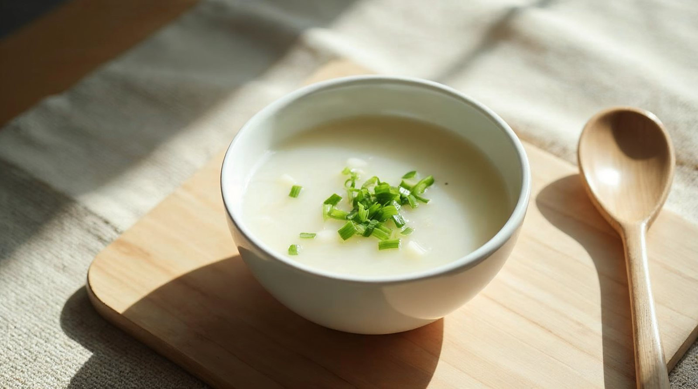
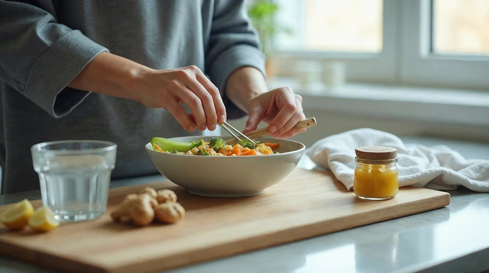
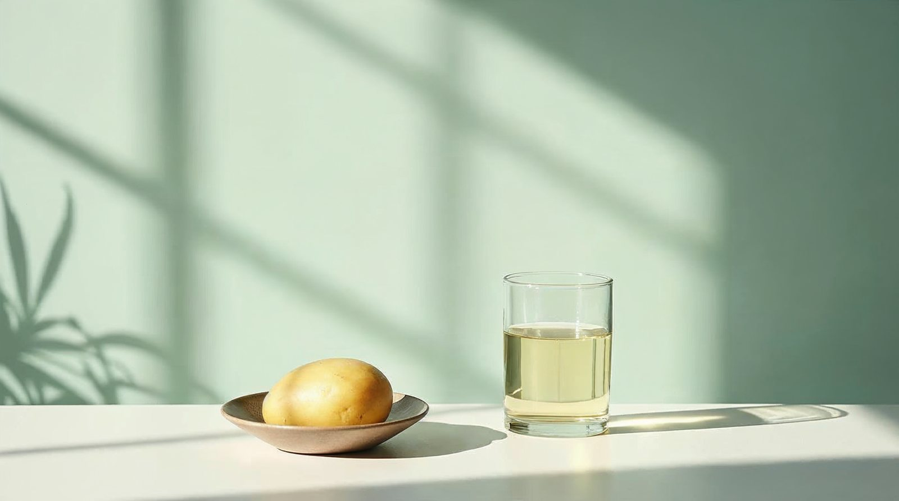

이종호 한의사 감수좋은꿈참사랑한의원 대표원장 (한의사 면허번호 19769)발행 2026-11-22 · 수정 2026-11-26
이 글의 차례
- 한 번 체한 것과 며칠 지친 것은 다른 얘기예요
- 왜 이런 불편이 생길 수 있나요
- 잠이 짧으면 속도 더 무거운 이유
- 왜 해마다 연말이면 같은 일이 반복될까요?
- 비슷해 보이는 불편은 어떻게 구분하나요?
- 예를 들면 이런 경우입니다
- 스스로 점검해 보세요
- 먼저 이렇게 여쭙니다
- 일상에서 먼저 해 볼 수 있는 것
- 모임 자리에서는 어떤 순서로 먹으면 좋을까요?
- 다음 날은 어떻게 먹으면 좋을까요?
- 한의원에서 함께 살필 수 있는 경우
- 첫 방문 때는 이렇게 살핍니다
- 얼마나 지켜보고, 언제 상담하면 좋을까요
- 연말을 덜 지치게 보내는 작은 준비
- 이렇게 기록해 오시면 상담이 쉬워집니다
- 이런 증상은 먼저 확인이 필요합니다
연말에는 늦게, 많이, 기름지게 먹는 날과 짧은 잠이 한꺼번에 이어집니다. 그래서 회식 하루의 문제라기보다 며칠간 흐트러진 리듬이 속에 쌓여 더부룩함과 속쓰림으로 나타나는 경우가 많습니다. 모임이 많은 시기에 속을 덜 지치게 하는 방법을 정리합니다.
12월 진료실에서 자주 듣는 말이 있어요. "원장님, 회식은 그저께였는데 아직도 속이 꽉 막힌 것 같아요." 그 말씀 들으면 저는 먼저 "원래 그래요"라고 말씀드려요. 이 시기에 속이 무거운 건 이상한 일이 아니거든요.
그러니까 사실은, 하루 과식한 것보다 그 앞뒤로 무너진 리듬이 더 오래 남는 거예요. 늦게 먹고, 짧게 자고, 다음 날 아침은 거르고, 점심은 대충 넘기고, 저녁에 또 모임이 있고요. 위가 쉴 틈이 없는 거죠.
한 번 체한 것과 며칠 지친 것은 다른 얘기예요
저는 이 둘을 나눠서 봐요. 한 번 체한 것은 그날 먹은 양과 속도가 문제인 경우가 많고, 하루이틀 속을 쉬게 하면 대개 가라앉거든요. 그런데 며칠씩 이어지는 더부룩함은 얘기가 달라요.
며칠 지친 속은 모임과 모임 사이에 위가 비어 있는 시간이 없었다는 신호인 경우가 많아요. 그래서 저는 "무엇을 드셨어요?"만큼 "모임 사이에 속이 비어 있던 시간이 있었어요?"를 꼭 여쭤요.
왜 이런 불편이 생길 수 있나요
- 기름진 안주와 고기는 소화에 시간이 오래 걸려 다음 날까지 더부룩할 수 있습니다.
- 술은 위를 자극하고 잠을 얕게 만들어 속쓰림과 피로가 함께 오기 쉽습니다.
- 늦은 시각에 먹고 바로 자면 음식이 위에 오래 머물러 아침에 속이 무거울 수 있습니다.
- 모임이 며칠 연달아 이어지면 위가 쉴 틈이 없어 불편이 길어지는 경우가 있습니다.
왜 회식 하루가 며칠씩 가는지 궁금하시죠? 저는 싱크대에 비유해서 말씀드려요. 저녁 설거지를 그날 하면 금방 끝나는데, 그릇이 쌓인 채로 다음 날 아침 설거지가 또 얹히면 치우는 데 훨씬 오래 걸리잖아요. 위도 비슷하거든요.
늦은 밤에 먹은 기름진 음식이 아직 다 내려가지 않았는데 다음 날 아침에 또 무언가가 들어오면, 위는 쉬지 못하고 계속 일을 하게 돼요. 이게 사흘, 나흘 이어지면 회식이 끝나도 더부룩함이 남는 거예요.
공백이 제일 중요해요, 공백이. 끼니와 끼니 사이에 속이 한 번 비는 시간이 있어야 위도 정리를 할 수 있거든요. 그래서 모임 다음 날에는 무엇을 먹느냐보다 언제 먹느냐를 먼저 보셨으면 해요.
한의학에서는 이렇게 속이 무겁고 입맛이 없으며 트림이 잦은 상태를 소화하는 기운이 지쳤다고 보고, 몸이 무겁고 잠이 얕은지도 함께 봐요. 같은 회식이라도 원래 속이 약한 분, 잠이 부족한 분은 더 오래 가는 경우가 많아요.
잠이 짧으면 속도 더 무거운 이유
연말엔 먹는 것만 바뀌는 게 아니라 잠도 같이 바뀌어요. 자정 넘어 들어와서 여섯 시에 일어나는 날이 이어지면, 같은 회식을 해도 속이 훨씬 오래 무겁다는 분이 많거든요.
밤에는 몸이 쉬면서 낮 동안 쓴 것을 정리하는 시간이에요. 그런데 늦게 먹고 바로 자면 위는 일을 하고 있고, 잠은 얕아지고, 아침엔 몸도 속도 덜 정리된 채로 일어나게 되는 거죠. 잠이 보약이라는 말을 제가 자주 드리는 이유예요.
술도 비슷해요. 술을 마시면 금방 잠이 드는 것 같지만 새벽에 자주 깨고 목이 마르다는 분이 많아요. 잠이 얕으니 다음 날 입맛이 없고, 입맛이 없으니 끼니가 엉키고, 그게 다시 속을 무겁게 하는 고리가 생기는 거예요.
그래서 저는 연말 속 불편을 볼 때 잠든 시각과 일어난 시각을 꼭 같이 여쭤요. 속만 따로 보면 이 고리가 잘 안 보이거든요. 몸 전체를 같이 봐야 하는 거예요.
왜 해마다 연말이면 같은 일이 반복될까요?
해마다 12월이면 같은 불편으로 오시는 분들이 계세요. 연말은 모임이 몰리는 달이기도 하지만, 한 해 일을 마무리하느라 긴장과 피로가 가장 많이 쌓이는 때이기도 하거든요. 지친 몸에 모임이 얹히니 속이 먼저 신호를 보내는 거예요.
그래서 저는 이 시기 속 불편을 "올해도 또" 하고 넘기기보다, 내 몸이 어느 때 먼저 지치는지 알아 두는 기회로 보셨으면 해요. 그걸 알면 내년 연말엔 미리 준비할 수 있으니까요.
비슷해 보이는 불편은 어떻게 구분하나요?
회식 뒤 속이 불편하다고 다 같은 건 아니에요. 어디가, 언제, 어떻게 불편한지에 따라 살필 방향이 달라지거든요.
- 명치가 꽉 막힌 듯 더부룩하고 트림이 잦다면, 위에 음식이 오래 머문 경우가 많아요.
- 신물이 목까지 올라오고 누우면 더 쓰리다면, 위산이 거꾸로 올라오는 쪽을 함께 봐요.
- 아랫배가 부글거리고 묽은 변이 이어진다면, 위보다 장이 예민해진 경우가 많아요.
- 기름진 음식을 먹은 날마다 오른쪽 윗배가 묵직하게 아프다면, 내과에서 따로 확인을 받아 보시는 게 좋아요.
이렇게 나눠 보시면 진료실에서 이야기가 훨씬 빨라져요. 정확히 모르셔도 괜찮아요. "어디쯤이 언제 불편했다" 정도만 기억해 오셔도 충분하거든요.
예를 들면 이런 경우입니다
- 예를 들어 한 주에 송년회가 세 번 몰린 경우라면, 저는 모임 날보다 모임 사이의 이틀을 먼저 봐요. 그 이틀의 아침과 점심을 어떻게 드셨는지에 따라 다음 모임 뒤의 속이 달라지는 경우가 많거든요.
- 예를 들어 회식에서 고기와 튀김 위주로 먹고 자정 넘어 귀가해 바로 잔 경우라면, 다음 날 아침 속이 무겁고 입이 쓴 게 흔해요. 이럴 때는 억지로 아침을 챙기기보다 따뜻한 물부터 드시고, 배가 고파질 때 죽이나 국에 밥을 말아 조금 드셔 보세요.
- 예를 들어 술은 거의 안 마셨는데도 늦게까지 앉아 안주를 계속 집어 드신 경우라면, 술보다 먹은 시간이 길었던 게 부담이 된 경우가 많아요. 배부르다는 신호를 놓치기 쉬운 자리였던 거죠.
스스로 점검해 보세요
- 회식 다음 날 아침에 입이 쓰고 입맛이 없다.
- 모임이 끝나고 사흘이 지나도 명치가 묵직하다.
- 모임 다음 날 아침을 거르고 점심을 몰아서 먹는 일이 잦다.
- 연말 들어 잠드는 시각이 평소보다 두 시간 넘게 늦어졌다.
- 트림이나 가스가 늘고 대변이 묽어지거나 딱딱해졌다.
- 평소에도 기름진 음식을 먹으면 속이 오래 무겁다.
앞의 네 가지가 많다면 리듬이 흐트러진 쪽, 뒤의 두 가지가 많다면 원래 속이 예민한 쪽을 함께 보면 돼요. 표시해 오시면 상담할 때 참고가 돼요.

먼저 이렇게 여쭙니다
- 회식이 일주일에 몇 번이고, 보통 몇 시에 끝나나요?
- 속이 불편한 때가 식사 직후인지, 다음 날 아침인지 어떤가요?
- 음주량과 안주의 종류, 먹는 속도는 어떤가요?
- 그 시기에 잠은 몇 시간 정도 주무셨나요?
- 평소에도 속쓰림이나 신물이 있나요?
- 모임 다음 날 아침과 점심은 어떻게 드셨나요?
- 대변은 묽어졌나요, 딱딱해졌나요? 트림이나 가스는 늘었나요?
- 지금 드시는 위장약이나 진통제, 다른 처방약이 있나요?
이 질문들이 많아 보이지만, 오시면 제가 하나씩 여쭤 볼 테니 미리 다 정리하지 않으셔도 괜찮아요. 기억나는 것만 말씀해 주시면 나머지는 대화하면서 같이 채워 가면 되거든요. 궁금한 건 그냥 편하게 물어보세요.

일상에서 먼저 해 볼 수 있는 것
- 모임 전에 우유나 죽처럼 가벼운 것을 조금 먹어 공복에 과식하지 않기
- 안주는 구이·튀김보다 채소와 국물 요리를 먼저 먹고 천천히 먹기
- 술 한 잔에 물 한 잔을 곁들이고 2차는 되도록 줄이기
- 모임 다음 날은 따뜻한 물과 소화가 쉬운 식사로 속을 쉬게 하기
- 속을 푼다며 해장술을 마시거나 잠들려고 술을 더 마시지 않기
- 모임이 연달아 있으면 중간에 일찍 귀가하는 날을 정해 두기
숙제를 이렇게 늘어놓았지만, 저는 다 지키시라고 하지 않아요. 연말에 그게 되면 처음부터 속이 불편하지도 않으셨겠죠. 원래 이 시기엔 그게 어려워요.
그래서 딱 하나만 부탁드려요. 마지막으로 먹은 뒤 바로 눕지 않는 거예요. 귀가해서 씻고, 짐 정리하고, 조금 앉아 있다가 주무시는 것만으로도 다음 날 아침 속이 다르다는 분이 많거든요. 딴 거는 편하게 하셔도 돼요.
모임 자리에서는 어떤 순서로 먹으면 좋을까요?
자리에 앉으면 바로 술잔부터 드는 경우가 많잖아요. 그런데 빈속에 처음 들어간 술과 기름진 안주가 다음 날 속을 가장 오래 붙잡는 경우가 많아요. 순서만 조금 바꿔도 부담이 덜할 수 있어요.
- 처음 10분은 국물이나 채소, 두부처럼 부드러운 것부터 몇 젓가락 드시기
- 고기와 튀김은 그다음에, 앞접시에 덜어서 양을 눈으로 확인하며 드시기
- 술잔을 비울 때마다 물을 한 모금씩 함께 드시기
- 자리가 길어지면 중간에 젓가락을 내려놓고 이야기에 집중하는 시간 갖기
- 마무리 라면이나 볶음밥은 배가 이미 부르다면 한두 숟가락만
먹는 속도도 중요해요. 이야기하며 천천히 드시면 배부르다는 신호를 알아차릴 틈이 생기거든요. 급하게 먹고 나서 한참 뒤에야 "아, 너무 먹었다" 하는 날이 다음 날 가장 힘들어요.
술을 드시지 않는 분도 연말 모임에서 속이 불편해질 수 있어요. 오래 앉아 안주를 계속 드시거나 단 음료를 여러 잔 드시는 경우가 그래요. 술을 안 드셨다고 안심하기보다 먹은 시간과 양을 같이 돌아보시면 돼요.
다음 날은 어떻게 먹으면 좋을까요?
- 아침: 배가 고프지 않으면 따뜻한 물이나 숭늉처럼 가벼운 것으로 시작하기
- 점심: 흰죽, 맑은 국에 만 밥, 두부나 달걀처럼 부드러운 것을 평소보다 조금 적게
- 저녁: 모임이 없다면 일찍, 가볍게 먹고 잠도 조금 일찍 자기
- 간식: 속이 비어 허전해도 과자나 단 음료보다 미지근한 물을 먼저
제가 해장을 이렇게 심심하게 말씀드리면 서운해하시는 분도 있어요. 얼큰한 국물이 당기는 마음은 저도 알거든요. 그래도 위가 지쳐 있을 때는 자극이 덜한 쪽이 몸에 덜 부담이 될 수 있어요.

한의원에서 함께 살필 수 있는 경우
- 연말 모임 뒤 속이 더부룩하고 소화가 더딘 경우 식사 속도와 소화 리듬을 함께 살핍니다.
- 기름진 음식과 술이 겹친 날마다 속이 쓰린 경우 위장의 상태와 식사 순서를 함께 여쭙니다.
- 모임이 이어져 식사와 잠이 불규칙한 경우 생활 리듬을 함께 정합니다.
- 연말이 지나도 입맛이 돌아오지 않고 몸이 계속 무거운 경우 소화와 피로, 잠을 함께 살핍니다.
- 해마다 모임 철이면 속이 먼저 탈이 나는 경우 평소 소화 습관과 체질을 함께 봅니다.
원래 속이 약하다고 느끼는 분들이 계세요. 남들은 다음 날 멀쩡한데 나만 사흘씩 간다고요. 그건 의지가 약해서가 아니라 원래 그렇게 타고난 거예요. 그런 분일수록 연말이 오기 전에, 혹은 연말 한가운데서 속 상태를 한 번 같이 보면 좋아요.
안 불편하다고 끝난 게 아니에요. 더부룩함이 가라앉아도 입맛과 잠, 대변이 평소대로 돌아왔는지까지 보셔야 다음 모임 철에 덜 고생하실 수 있거든요.
첫 방문 때는 이렇게 살핍니다
좋은꿈참사랑한의원에서는 모든 분의 맥을 먼저 짚고, 식사 시각과 양, 대변과 잠의 변화를 충분히 들어요. 필요하다고 판단될 때 설진·복진을 더해 속이 어떤 상태인지 함께 봐요.
그 뒤 상태에 맞춰 침이나 한약 상담 등을 정해요. 한약을 상의할 때는 지금 드시는 약부터 확인하고, 위장약이나 다른 처방약은 처방한 의사와 상의 없이 줄이거나 끊지 않아요.
귀가 전에는 다음 모임까지 식사에서 먼저 바꿔 볼 점 하나와, 다음에 오시면 확인할 일을 알려 드려요. 치료는 제가 맡을게요. 모임을 다 빠지시라고는 안 할 테니 걱정 마세요.
얼마나 지켜보고, 언제 상담하면 좋을까요
모임이 끝나고 평소 식사와 잠으로 돌아가면 사흘 안팎에 가라앉는 경우가 많아요. 그 사이에는 식사 시각을 너무 늦추지 않고 속을 쉬게 해 보세요.
모임이 끝난 지 일주일이 지나도 더부룩함이 그대로이거나, 해마다 연말이면 같은 일이 되풀이된다면 한 번 상담을 받아 보세요. 원래 속이 지쳐 있던 건 아닌지 같이 보면 돼요.
연말을 덜 지치게 보내는 작은 준비
모임을 줄이기 어렵다면, 모임과 모임 사이를 조금 손보는 것만으로도 차이가 날 수 있어요. 센 각오보다 약하게, 꾸준히 하는 게 더 오래가거든요.
- 모임이 있는 날 점심은 거르지 말고 평소처럼 드시기. 점심을 거르면 저녁 자리에서 허겁지겁 먹게 되기 쉬워요.
- 다음 날 아침 일정이 이르다면 1차에서 일어나는 날로 미리 정해 두기
- 모임이 없는 날은 저녁을 이르게, 잠은 평소 시각에 맞추기
- 하루 이삼십 분이라도 천천히 걷기. 퇴근길에 한 정거장 먼저 내려 걷는 정도면 충분해요.
저도 연말엔 모임 음식 앞에서 고민하는 사람이에요. 이 싸움은 계속 가는 거죠. 그래서 다 참으라는 말 대신, 다음 날 하루를 어떻게 보내느냐를 같이 정하자고 말씀드려요.

이렇게 기록해 오시면 상담이 쉬워집니다
- 모임 날짜와 끝난 시각, 마신 술의 양
- 속이 불편했던 시간대와 증상(더부룩함, 쓰림, 신물)
- 대변 모양과 횟수의 변화
- 복용 중인 약(위장약, 진통제 등)
기록은 길 필요가 없어요. 휴대전화 메모에 "12/3 회식, 11시 귀가, 소주 반병, 다음 날 아침 더부룩" 정도로 한 줄씩만 남겨 주시면 돼요. 일주일만 모아도 어떤 날 속이 더 무거운지가 보이는 경우가 많아요.
모임 사이에 속이 편했던 날도 같이 적어 주세요. 편했던 날 무엇이 달랐는지를 알면, 다음 모임 때 그걸 한 번 더 해 보면 되거든요.
이런 증상은 먼저 확인이 필요합니다
- 검은 변이나 피가 섞인 변, 피를 토하는 경우
- 참기 어려운 복통이 계속되는 경우
이런 신호가 있으면 한의원보다 가까운 병원이나 응급실을 먼저 찾으세요.

여쭙는 것
- 회식이 일주일에 몇 번이고, 보통 몇 시에 끝나나요?
- 속이 불편한 때가 식사 직후인지, 다음 날 아침인지 어떤가요?
- 음주량과 안주의 종류, 먹는 속도는 어떤가요?
생활에서 해 볼 것
- 모임 전에 우유나 죽처럼 가벼운 것을 조금 먹어 공복에 과식하지 않기
- 안주는 구이·튀김보다 채소와 국물 요리를 먼저 먹고 천천히 먹기
- 술 한 잔에 물 한 잔을 곁들이고 2차는 되도록 줄이기
한의원에서 함께 살필 것
- 연말 모임 뒤 속이 더부룩하고 소화가 더딘 경우 식사 속도와 소화 리듬을 함께 살핍…
- 기름진 음식과 술이 겹친 날마다 속이 쓰린 경우 위장의 상태와 식사 순서를 함께 여…
- 모임이 이어져 식사와 잠이 불규칙한 경우 생활 리듬을 함께 정합니다.
먼저 확인이 필요한 신호
- 검은 변이나 피가 섞인 변, 피를 토하는 경우
- 참기 어려운 복통이 계속되는 경우
한눈에 보는 표
| 구분 | 핵심 |
|---|---|
| 여쭙는 것 | 회식이 일주일에 몇 번이고, 보통 몇 시에 끝나나요? 속이 불편한 때가 식사 직후인지, 다음 날 아침인지 어떤가요? |
| 생활에서 해 볼 것 | 모임 전에 우유나 죽처럼 가벼운 것을 조금 먹어 공복에 과식하지 않기 안주는 구이·튀김보다 채소와 국물 요리를 먼저 먹고 천천히 먹기 |
| 한의원에서 함께 살필 것 | 연말 모임 뒤 속이 더부룩하고 소화가 더딘 경우 식사 속도와 소화 리듬을 함께 살핍니다. 기름진 음식과 술이 겹친 날마다 속이 쓰린 경우 위장의 상태와 식사 순서를 함께 여쭙니다. |
| 먼저 확인이 필요한 신호 | 검은 변이나 피가 섞인 변, 피를 토하는 경우 참기 어려운 복통이 계속되는 경우 |
자주 묻는 질문
회식 뒤 속이 불편하면 어떻게 살피나요?
먹은 시각과 양, 음주, 수면, 평소 소화 습관을 함께 묻고 생활 전체의 흐름 속에서 살핍니다.
숙취가 있는 날 식사는 거르는 게 좋은가요?
굶기보다 소화가 쉬운 음식을 조금씩 드시는 편이 부담이 적고, 심한 증상이면 진료를 받으세요.
모임이 많은 시기에 미리 할 수 있는 일이 있나요?
식사 시각을 크게 늦추지 않고 모임 사이에 쉬는 날을 두는 정도가 현실적입니다.
해장국은 괜찮나요?
따뜻한 국물은 부담이 덜하다는 분이 많지만 맵고 짠 국물은 속쓰림을 키울 수 있어 순한 것으로 드세요.
좋은꿈참사랑한의원은 재진 때 지난번 이야기부터 이어서 여쭙니다. 진료시간과 예약은 오시는 길에서 확인하세요.
어디서 상담받을 수 있나요?
좋은꿈참사랑한의원은 서울 동작구 만양로2길 2 신성빌딩 3층·5층(서울 동작구 상도동, 7호선 상도역 3번 출구 근처)에 있습니다. 한의사 3명(이종호 대표원장, 조영기 수석진료원장, 정원영 진료원장)이 진료합니다. 진료시간은 평일 09:30~20:00(점심 13:00~14:00), 토·일·공휴일 09:30~15:00이며, 방문 전 전화로 확인을 권합니다. 예약은 네이버 예약, 카카오톡 상담, 전화 02-815-7510로 받습니다.
이 글은 일반적인 건강 정보이며 개인의 진단이나 치료를 대신하지 않습니다. 증상이 있거나 복용 중인 약이 있다면 진료를 통해 확인하세요. 치료 효과는 개인마다 다를 수 있습니다.
작성 기준: 일반적으로 알려져 있는 건강 정보를 참고해 정리했습니다(대표원장 감수). 증상 기록은 1~2주 동안 하루 1회, 비슷한 시간에 적어 오시면 지난 상태와 비교하기 쉽습니다.